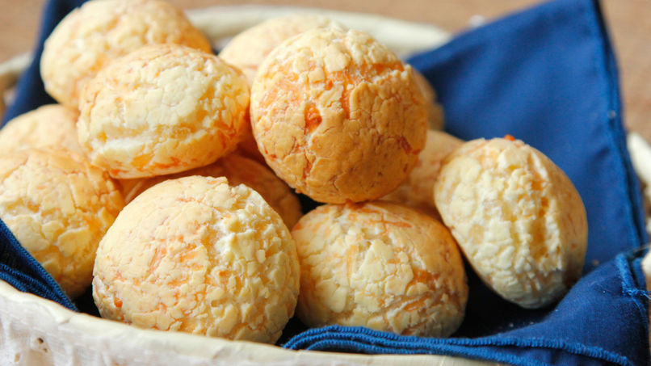
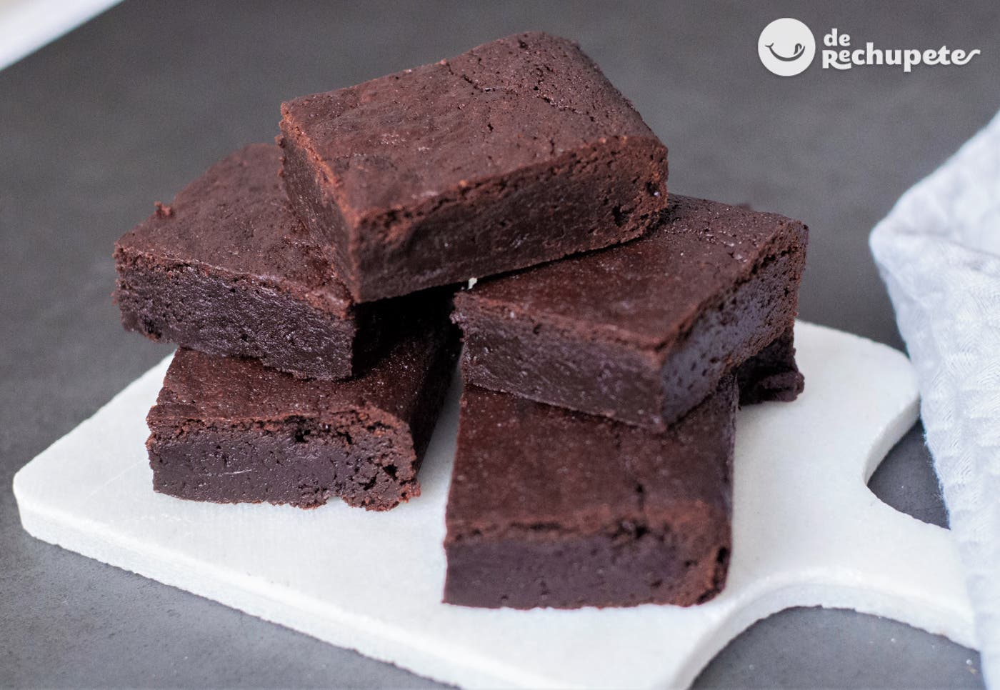

dos paquetes de queso en hebras
300 gramos de harina
80 gramos de manteca
1 cucharadita de polvo para hornear
1 cucharadita de sal
2 huevos
70 mililitros de leche
¿Como lo hacemos?
mezcla el queso, harina, manteca,una cucharadita de polvo para hornear,
una cucharadita de sal hasta que quede como arena
batir dos huevos, hecharlo con los otros ingredientes mezclados
Echar leche, unir, envolver con un film y llevarlo a la heladera por 30 min
Hacer bolitas y meterlo al horno por 250 grados aprox., por 10 min
y tenemos listos nuestros chipa
Alitas de KFC
Harina
Yogurt natural liquido
Pimienta
Ajo seco
cebolla seca
Sal
Especies picantes
¿Como lo hacemos?
en un bowl mezclar yogurt natural con las especies picantes, partir las alitas, mezclar todo y dejar reposar
para empanar poner en un recipiente harina, pimienta, Ajo, cebolla, pimentos y sal sacar las alitas de la mezcla anterior, empanar y freiry tenemos listas nuestras alitas de KFC

Milanesa rellena
Dos bola de lomo
Jamón cocido 200gr
Queso de manica 200gr
Huevo
Leche
Pan rallado
Peregil
Orégano
¿Como lo hacemos?
En una bola de lomo poner queso y jamón tapar con otra bola de loma en una mezcla huevo,
perejil, orégano, leche y pimienta revisar y pasar por pan rallado (opcional pasar dos veces)freír y listo

Brownies
150gr de manteca
Dos cucharadas de agua
Media taza de azucar
Media taza de chocolate
Esencia de vainilla
Dos huevos
Un tercio de taza de harina
¿Como lo hacemos?
En una olla a fuego mínimo mezclar la manteca,
las cucharadas de agua, el chocolate, el azúcar y la escencia de vainilla
Luego de haberla derretido y enfeiado mezclar con los huevos y la harina
Mandar al horno por 180° por 30 a 20 minutos
y listo
Serenito casero
4 yemas
30gr de maizena
120gr de azúcar impalpable
300ml de leche
50gr crema de leche
Dulce de leche / vainilla / chocolate
¿Como lo hacemos?
mezclar la fécula de maíz con las yemas y el azúcar impalpable hasta no tener grumos,sin dejar de batir
echar le leche con la crema de leche hirviendo con fuego mínimo cocinar a baño maría, hasta que espece
mezclando continuamente en un recipiente colocar la mezcla con el endulzarte que quieras, puede ser
chocolate dulce de leche o vainilla en un baso lo llevas a la heladera por unas dos horas

Bombones de Nesquik
Crema de leche
Cacao / Nesquik
¿Como lo hacemos?
En un recipiente colocar un vaso de Nesquik con cuatro cucharadas de crema de leche,
mezclar hasta que quede chicloso luego revosar con Nesquik y a la heladera

Malvaviscos
150gr
8 cucharadas de agua
Gelatina en polvo
Dos claras de huevo
¿Como lo hacemos?
Hervir la azúcar y el agua por 3 minutos Mezclar con batidora la gelatina con las claras de huevo
hasta que levantés la batidora y caiga depacio después echar el garage que hicimos antes y mezclamos,
luego que aparezca espuma en un recipiente cuadrado o redondo ponemos film y lo llenamos con esta mezcla, lo espolvoreamos
con azúcar impalpable y lo llevas a la heladera por 2 horas y por ultimo lo cortas en cuadraditos